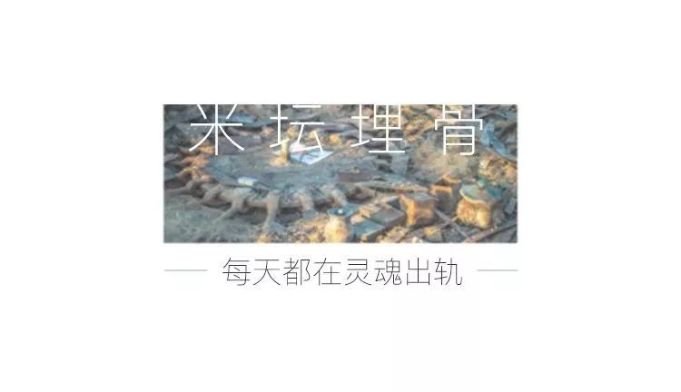

生活不止眼前的病毒，还有诗和复工丨单读
原文链接 备份链接 疫情让我们陷入焦虑与恐惧之中，比起宅在家里无所事事，很多人宁愿复工，回归熟悉的节奏与忙碌。今天的来信者是一位诗歌爱好者，封闭在家的日子里， ta 写诗、读诗，捕捉压抑生活中的一丝诗意。这份诗意也一直延续到了 ta 复 …


我在2月底从纽约飞到了湾区，几乎是抱着出逃的心情。纽约的冬天太长了，新年之前好歹还有几个节日，翻过年后，往往要到四月初才会缓慢转暖，在那之前我就会有熬不下去的感觉。
加上再过两天就是我生日，虽说年纪越大越不想过，但这次却又隐隐害怕要一个人过。
回想那天，真是恍若隔世。当时全美的新冠确诊总共才60多例，纽约一例都没有，旅行的一路上，周围人来人往，没有任何受其影响的迹象。
五个多小时的飞行后，出了圣何塞的机场，我坐在航站楼门口的椅子上等小西来接，好像很久没有不穿羽绒服呆在室外了，微凉的风吹在脖颈之间，让人如释重负。
和湾区的朋友自上次火人节后一别已是半年未见了，但是比起我和更多国内朋友再会的遥遥无期，他们显得触手可及。
我和小西都是比较慢热的人，在高速路上，我们花了点时间更新彼此的近况，并重新找回了亲近的感觉，火人节每次都会是那个入口。
小西在上次的火人节中开始了一段新的恋情，几多波折，等我们见到的时候，这段恋情貌似已经落幕，留下残局仍在，造成的伤害也是显而易见的。她说，在火人节里面和外面是不一样的，现实世界里有太多的规则，人就变了。还说，今后再也不在火人节里恋爱了。
我自上次火人节之后，情感上好像完成了一次结业，因为觉悟到自己在乎的一切都在现实世界里，再也不会把那个虚拟的乌托邦当成心灵寄托了。但是因为整个19年和20年开年积攒下很多的痛苦和动荡，最近又很怀念黑石城里的日子。
刚住下没多久，小西便提到周围很多人在屯食物，后来我们去到当地的超市一看，物资供应充足，也就没担心。我是一个不见棺材不掉泪的人，也照常哪儿哪儿都去。
所以一开始还是非常愉快的，我无缝适应了湾区的生活，每天照常宅和工作，此外就是隔三差五地和朋友聚会喝酒，每每喝到凌晨才散场。酒精发挥着强效的镇痛作用，也会带来一点逃避的罪恶感。但在见证国内如此惨烈的浩劫之后，这正是我当下需要的——为了短暂解除思虑的重负。
我一直住在小西家，她的家就如同很多湾区朋友的居住风格一样，是一栋独立的两层house，有车库和院子。院子里每天洒满了加州的阳光，头顶是鲜亮的碧树和蓝天，高高的木栅栏上偶尔有大个头的松鼠跑过。角落里种着一株柚子树，结满了沉甸甸的明黄色柚子，可惜无人采摘，它们便掉落到地上慢慢腐化。小西经常对着院子抽烟，我也时不时会走到院子里晒晒太阳，稍微坐上一会儿，背上就晒得发烫。
小西把一间卧室收拾出来给我住，一张大床背靠着窗户，窗户没有窗帘，所以每天早上我都是在满床的阳光下热醒的。家里养了两只猫茶茶和狗子，尤其喜欢白嫖陌生人，一觉醒来总会发现它们其中一只躺在我身旁。
最羡慕的是家里宽敞的客厅。在纽约，我们为了节省租金，很多公寓客厅被隔出来住人，我家也一样。当失去最亲近的公共空间后，我和室友就只能当彼此熟悉的陌生人，仿佛每个人的生活都在最末端离散。纽约给了我理想中的公共空间和公共生活，但我也变成一个只有私人空间，却没有私人生活的人。
走出去是全世界，回到家是一个人，这就是我常年的状态。
我们就这样几乎天天晚上腻在客厅里，围坐在地毯上东倒西歪地聊天喝酒，有时是相同的人，有时是不同的人，但经常来的人总是那两三个。桌子上摆着大家凑来的各种酒和零食，小音箱里会放着不同人的歌单，多是文艺青年的靡靡之音。小西拿出了很多美丽的画册，还有火人节上剩下来的大麻糖招待我们。我以前从来不买画册，因为又贵又重还没地方放，但我第一次发现边翻画册边聊天是多么惬意——卢浮宫的展品和巴黎街头的旧日影像会唤起我对重访欧洲的向往，在酒精和大麻的催化下，远方也变得轻盈起来，好像已在神游。
这是我在纽约的反贼聚会里从没遇过的场景。我知道湾区的小布尔乔亚们如此腐败，所以才来的，果然没让我失望啊。
过去的一年多，除了回了趟国，然后开年的时候去了台湾参访，其他时候都没出过远门。我盼望再次上路的心情，变得越来越迫切。
罗勉在的时候，我们会聊很多关于政治和形而上的东西，他不在的时候，我们就聊最琐碎的生活。小西主动诉说了很多她的情伤，还有很多和爱情无关的伤害，陆陆续续的，这是我认识她之后她对我开放得最多的一次，很多情节让我觉得，那已是出于毫无保留的信任。
小西很美，感情丰富，非常受异性欢迎，一直在科技大公司工作，住着自己买的大房子，也早就拿到了美国绿卡。我曾觉得她已经得到一切，可是那一刻我想，为什么我们都在苦苦挣扎。
也是在没完没了的酒局里，我察觉到了其他人都有求之不得，或是欲罢不能的东西。某一个时刻，那种欲盖弥彰的孤独感在空气里出现，突兀得我难以直视。
如果不是在这样一个脆弱的氛围里，不忍心去细想我们会被怎样打碎。不仅是她，我最近对身边朋友们的边缘状态特别敏感，常在内心为之唏嘘，难以忘怀，可能是因为我也陷入边缘状态很久了。
画册翻完了之后，小西会尝试拿出更多的画册，直到没有更多。然后她说：要不我给你们看我买的包吧？
她拿出很多个新买的名牌包包给我们欣赏，个个做工精良，分量扎实，一看就价格不菲。然后她对我说：有时候觉得有一点物欲挺好的。
作为一个物欲已经枯竭的人，我发自内心赞同这一点，并怀念起我从中国千里迢迢带过来，却一次都没背出过门的限量版Chanel。
今年的3月1日幸运的是个周末，大家约好了要来给我过生日。前一天晚上，我和小西、罗勉窝在沙发上一起看电影，我们一直默默无语地看着，看到快要结束的时候，他俩一前一后起来去了厨房。还没等我反应过来，灯就灭了，小西端着一个点亮的生日蛋糕走了出来，满脸笑意盈盈：
“米米，生日快乐！”
我们像小学生一样唱生日歌、许愿吹蜡烛然后边吃蛋糕边聊天，突然又打开了话匣子一样，因为心里无比温暖，我第一次跟他们说起了今年会履行的一个重要决定，我曾经为此忐忑难安，又暗自激动，因为那将会是一段未知的旅程。
从2016年离开中国之后，我的人生就好像拐进了另一个轨道，一路上都是纷至沓来的变动，再也没有进入过安全区，有时我会感到疲于奔命，但好在从不无聊。
可能唯一的遗憾，就是这条路我一直是一个人在走，所以讲给朋友听听，也算聊以慰藉。
第二天睡到了自然醒，我和小西出门买食材，准备在家做火锅。晚上的时候朋友们都陆陆续续来了，带着酒，礼物，蛋糕，气球……仿佛又回到了上一年火人节结束后，我们天天腻在一起开party的日子。
我就像怀念物欲一样怀念和他们在一起蹉跎光阴。不必有知识的增长，也不必有观念的碰撞，有时候甚至没有了更多的话可说，就只是在一起，像个肉眼凡胎的人那样。
记忆中从来没有像这次一样生日过了两次，有点受宠若惊。蛋糕上象征性地插着几根蜡烛，大家都很有默契地没有问起我的年龄，仿佛这个数字有多么残酷。我知道，自己已经到了再不冻卵就要过期的岁数了，但可能是纽约给我注入了太多新鲜血液，无限延长了我的青春期，所以在同龄人准备进入人生下半场的时候，我仍然什么都没有定式，还在幻想有好戏等待开场。
好像得意忘形的时候，生活就总会提醒你一些操蛋的事。刚过完生日第二天，我的微信号就又被封掉了，算上被封的大号，这已经是我第四个废掉的号了，使用寿命不到一个月。虽说名义上可以解封，但因为微信的各种关卡，总令我处处碰壁，最后无路可行。
对我来说，最大的问题是失去了一个可以随时记录日常的地方，因为我很喜欢发朋友圈，那是我写作灵感与素材的来源，而这段时期频繁被封号，让我没能留下很多转瞬即逝的片段，又没有心情去使用其他疏于打理的平台。
真有趣，现实世界里的我和虚拟世界里的我竟然都在流浪，那简直是流浪之上的流浪。我不但离开了故土，还离开了我暂时的居所，我甚至都不在纽约，我甚至都没有了小号。
关于我的整个世界，仿佛都暂时被放逐在外，进而被抛诸脑后了。而我像是躲在避风港里回血的无名之辈，微弱得没有自己的声音与面貌。
还伴随着发生的坏消息是，纽约出现了第一例确诊的新冠感染者，三天后，加州宣布进入紧急状态。情势很快恶化，估计是因为人口密度和高频率的流动，纽约变成了病毒蔓延最快的城市，过去还不到一个月，今天竟已确诊逼近一万例，并且还在加速攀升的趋势中。荒谬啊，上个月的这个时候我还在纽约参加李文亮的悼念会，遥遥挂念着武汉，而今天纽约也已在封城边缘。这是我迟迟不能回归原先生活里的一个不可抗力。
所幸那时的觉悟也应该迎来考验——我从未以置身事外的心态来看待这次灾难，以及它所意味的所有问题。
一切计划都被悬置，原本无比稳定的湾区生活也开始充满不确定性。罗勉本来马上要做他的政治学博士论文开题报告，为此还十分自律地在一次周末酒局上提前回家做PPT。结果就在开题报告前夕，据他说“在一个小时内发生了三件事“：斯坦福有一个教授确诊了，有俩学生疑似；全校停课了；然后他的开题报告会也取消了。
于是他也彻底放飞自我，又跑来找我们喝酒，喝到直接在沙发上坐着睡了一晚。我和小西第二天中午打算出去吃饭，一下楼才发现他还保持着原样呆在原处。
虽然喝了个宿醉，但他讲究依然是很讲究的，出门之前不忘要来小滚筒粘掉了衣服上的猫毛。桌子上一片狼藉，摆满了昨晚残留的酒瓶和酒杯，罗勉便随手把小滚筒往上面一放，小西忍不住提醒他：“你把它收好嘛，还是要维持一下啊。”
在开车去餐厅的路上，罗勉回味说，这个“维持”是个很有意思的词，因为它没有要求你变得更好，而仅仅是差不多过得去就行了，只要别彻底放弃。我突然很有感触，说，我在纽约的生活长期以来就是这样，经常会感觉渴了，饿了，家里乱了，脏了，又缺什么了，各种基本而必须的需求层出不穷，使我总是处于边缘状态，需要用点功夫“维持”，不让自己失去平衡甚至崩塌。
我认为这是一直游离在体制之外的结果，这个体制并不是指中国语境里那些和政党有关的组织，而是广义的社会系统，包括婚姻家庭、工作、社区邻里、亲人朋友，他们能够组成你的安全网。但我现在已经是最大程度上脱离这些体制了，罗勉至少还在读PhD，算是身在一个完善的系统内，我显然比他更加边缘。这种边缘状态下的情感和精神状态，很值得玩味。
当然，孽很大程度上是自己作出来的。我追逐自由追到了尽头，不会奇怪看到这番光景。但我确实越来越需要朋友，并一直尝试在纽约寻找和建立社群。身而为人，总是要有一些归属感的。
小西说，她也很能够体会“维持”的心态，她在感情里时常进退不能，就只能努力维系现状。
聊到最后，我尝试做了一个积极的注脚，说：其实边缘状态让我更加接近真实，我从来没有这么真切地感受到自己活着，每一个选择和决定都是自己意志的结果，而不是集体无意识下的随波逐流。
可能是因为习惯了这样吧，疫情的发展直到现在也没有令我恐慌。
(未完待续)
两件事：
可能公众号的读者会奇怪为什么我很少更新了，那是因为我目前的主要写作平台在Matters，那里更自由开放，更新也更勤快，欢迎大家去那里关注我，搜索“米米亚娜”即可。
最近我私人微信号被封频繁，所以避免大家麻烦，这里暂时不公布我的新号，我们来日方长。

原文链接 备份链接 疫情让我们陷入焦虑与恐惧之中，比起宅在家里无所事事，很多人宁愿复工，回归熟悉的节奏与忙碌。今天的来信者是一位诗歌爱好者，封闭在家的日子里， ta 写诗、读诗，捕捉压抑生活中的一丝诗意。这份诗意也一直延续到了 ta 复 …
原文链接 备份链接 题图来自网络 昨天我们给大家介绍了疫情下的美国的真实情况，今天我们移步到德国。截至3月7日晚，德国共有15个州（共16）出现新冠状肺炎，确诊847例，无死亡。 疫情下的德国纪实 文／大梨 在这场对抗新冠病毒的战争中，武 …
原文链接 备份链接 友情，是尘埃写作里的一个关键主题，是她乐观的来源，是她做到持续“打鸡血一样工作”的支柱。她擅长写漂泊的生活，因为那是她最常见的生活形态。在这样的”移步换景“的写作诉求里，她遇到的最大的问题是：小处和大处怎么衔接和表 …
原文链接 备份链接 在潜江第五周（2月18日—2月24日）的记录，21日空缺，为朋友讳。仍然回不了武汉。 2月18日 这两天看新闻很少。偶尔上微博，几乎不看朋友圈。唯一持续跟踪的，是疫情数据和省市文件的更新。数据相对固定，文件更新太多了， …
原文链接 备份链接 距新型冠状肺炎疫情公开已经过去二十多天了，从最初的混乱和恐慌至今，人们似乎在一点点变得平静。生活的节奏被打乱，取而代之的是对 “非正常状态” 的逐渐习惯。对很多参与在捐助行动里的人也是，紧张感从没消失，只是变得可以适 …